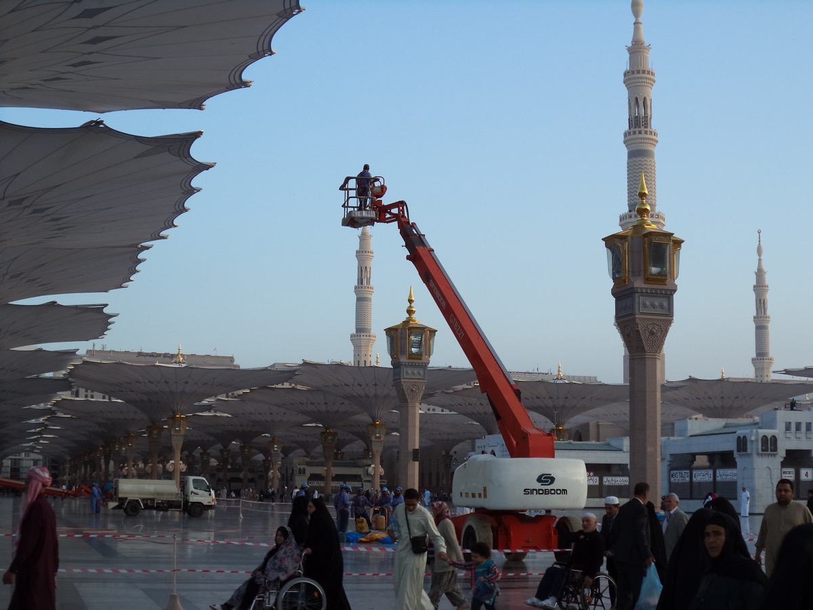

Umre Evrak ve Kayıt Süreci
Umre kaydı, pasaport, vize, aşı, otel ve kafile bilgileri hakkında geniş rehber.
Bu sayfada ne öğreneceksiniz?
Umre evrakları ve kayıt sürecinde dikkat edilmesi gerekenler. Konuyu özet geçmeden, ilk kez umreye gidecek birinin gerçekten işine yarayacak şekilde anlatıyoruz.
Pratik yaklaşım
Umrede bilgi kadar sıra, sakinlik ve hazırlık önemlidir. Bu bölümde hem ibadet tarafını hem de yolculukta karşılaşılabilecek pratik durumları birlikte okuyacaksınız.
A. Pasaport ve Kimlik
Umre için pasaport süresi erken kontrol edilmelidir. Ülkelerin istediği geçerlilik süresi değişebileceği için başvuru öncesinde resmi şartlara bakmak gerekir. Kimlik bilgileriyle pasaport bilgileri arasında uyumsuzluk olmamalıdır.
Pasaport ve kimlik fotokopileri ayrı bir dosyada taşınmalı, ayrıca telefonda güvenli bir dijital kopya bulundurulmalıdır. Otel kartı ve kafile bilgileri de kolay ulaşılır yerde olmalıdır.
Umre için pasaport süresi erken kontrol edilmelidir.
B. Vize ve Kayıt
Umre vizesi dönemsel uygulamalara göre değişebilir. Kayıt sırasında tur programı, uçuş saati, otel konumu, oda tipi, Medine-Mekke sıralaması, servis düzeni ve rehberlik hizmeti dikkatle incelenmelidir.
Ucuz paket seçerken yalnız fiyata bakmak doğru olmaz. Harem’e mesafe, servis sıklığı, oda kalabalığı ve kafile rehberliği yolculuğun kalitesini belirler.
Umre vizesi dönemsel uygulamalara göre değişebilir.

C. Aşı ve Sağlık Belgeleri
Bazı dönemlerde aşı, sağlık bildirimi veya özel uygulama şartları istenebilir. Bu bilgiler ülkelerin güncel kararlarına bağlı olduğu için kayıt öncesi resmi duyurular kontrol edilmelidir.
Kişi düzenli ilaç kullanıyorsa reçete veya ilaç listesini yanında taşımalıdır. Özellikle yaşlılar ve kronik hastalığı olanlar için bu bilgi acil durumlarda önemlidir.
Bazı dönemlerde aşı, sağlık bildirimi veya özel uygulama şartları istenebilir.
D. Kafile Bilgileri
Kafile başkanı, grup rehberi, otel adresi, oda numarası, servis noktası ve acil telefonlar yolculuktan önce kaydedilmelidir. Kafileden kopmamak özellikle ilk kez gidenler için çok önemlidir.
Mekke ve Medine’de benzer otel isimleri, kalabalık çıkışlar ve yoğun servis noktaları karışıklık oluşturabilir. Bu yüzden otel konumu telefona çevrimdışı harita olarak da kaydedilebilir.
Kafile başkanı, grup rehberi, otel adresi, oda numarası, servis noktası ve acil telefonlar yolculuktan önce kaydedilmelidir.
Vize, aşı ve kayıt şartları değişebileceği için son karar öncesi resmi duyuruları ve yetkili acente bilgisini mutlaka kontrol edin.